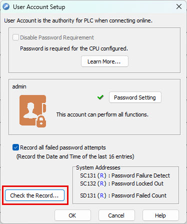
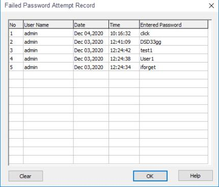
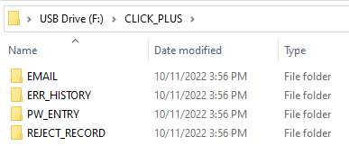
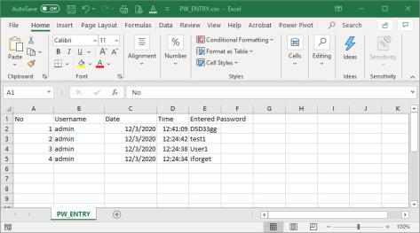

Topic: CL281

| Failed Password Attempt Record |
Topic: CL281
|
A failed login attempt is defined as an unsuccessful login attempt made with the CLICK Programming Software when trying to connect to the PLC on a new session. While in the same active session with the programming software, the failed attempts are not logged. This record can be used as an indicator that an unwanted actor is trying to guess or hack the password used in the PLC. Most often it may only be users who have mistyped or forgotten their password.
When enabled on the User Account Setup screen, the Failed Password Attempt Record will record the last 16 failed login attempts made by users logging into the PLC with the CLICK Programming Software. This record will reside in the PLC and can be viewed with two methods:
When connected to the PLC with the programming software select the CPU Configuration>User Account Setup>Check the Record button.

The Failed Password Attempt Record window will open. The log can be erased using the Clear button.

When you are connected with the programming software select the PLC>SD Control Center. Select the Copy button in the Copy System LOG Data to SD Card section.

This will create a folder named PW_ENTRY on the SD card where a PW_ENTRY.csv file will also be created that contains the recorded failed password attempts.


The date and time are recorded, as well as the entered password.